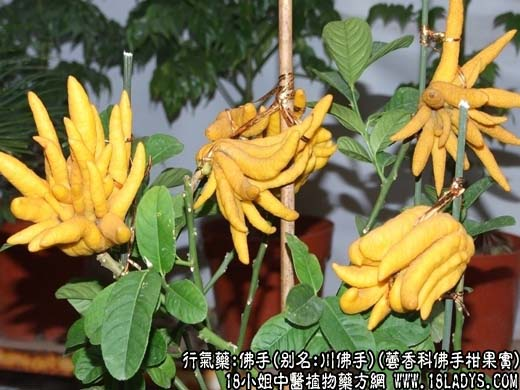
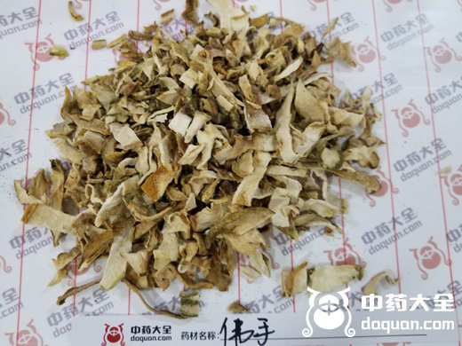
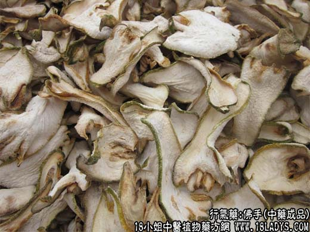

佛手源植物图片

佛手图片

【中药概述】
佛手，别名：川佛手、广佛手，为芸香科小乔木植物佛手柑的果实。辛、苦，温。归肝、脾、胃、肺经。
1．疏肝理气：用于肝郁气滞的胁肋胀痛、胸腹痞满、消化不良，有舒肝和胃、行气止痛的作用，可配木香，青皮，麦芽等同用。
2．用于食欲不振、嗳气、呕吐，有醒脾和胃的作用，可与白豆蔻，砂仁，藿香，半夏等同用。
此外，用于咳嗽痰多之证，可与半夏，茯苓等同用。
【药物形态】
本品为类椭圆形或卵圆形的薄片，常皱缩或卷曲，长6～lOcm，宽3～7cm，厚0.2～0.4cm。顶端稍宽，常有3～5个手指状的裂瓣，基部略窄，有的可见果梗痕。外皮黄绿色或橙黄色，有皱纹和油点。果肉浅黄白色，散有凹凸不平的线状或点状维管束。质硬而脆，受潮后柔韧。气香，味微甜后苦。
【药效鉴别】本品善疏肝止痛，又能入脾以行气和胃，入肺以理气化痰。
【药理作用】能扩张冠状动脉，并能抑制离体肠管运动。
【化学成分】含挥发油、柠檬橘内酯及微量洋芫荽甙和橙皮甙等。
【用量用法】3——10g，水煎服，或入丸、散剂。
【注】佛手花（即佛手柑的花）辛，苦，温。有平肝功效。治疗肝胃气痛，可配白芍、乌药等同用；梅核气可配蔷薇花、玫瑰花、绿萼梅等。